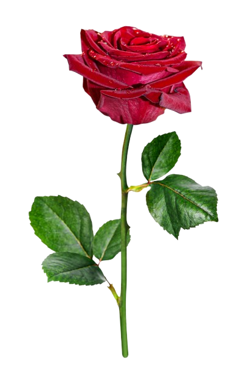
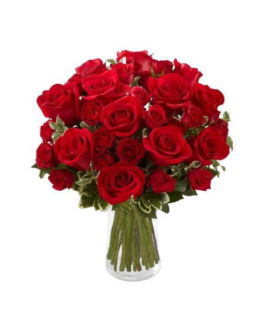
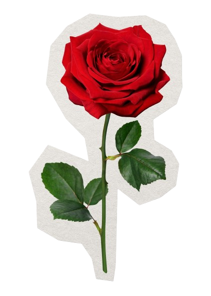

My love, I'm so sorry I can't present these blossoms to you in person. Each flower carries a piece of my heart and whispers of my undying affection. I dream of the day when I can see your eyes light up as you hold them. Until then, let these blooms remind you of my endless, passionate love.


